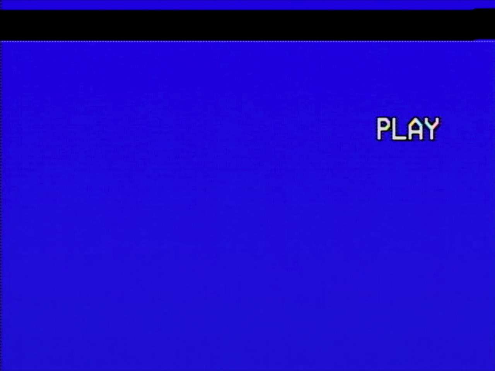

quentin.
enter password
>
access denied
enter
try another way
12
2:00
clear the board
right-click or long-press to flag
try another way
video poker
land four of a kind or better to unlock
?
deal to begin
tap a card to hold · hand
0
try another way
how to play
deal
get 5 cards
tap
hold the cards you want
draw
replace the rest
★
match a starred hand to unlock
— pay table —
★
royal flush
10 J Q K A · same suit
★
straight flush
5 in a row · same suit
★
four of a kind
4 cards · same rank
·
full house
3 + 2 of a kind
·
flush
5 cards · same suit
·
straight
5 cards · in a row
·
three of a kind
3 cards · same rank
·
two pair
two pairs
·
jacks or better
pair of J / Q / K / A
close
2048
score
0
reach 2048 to unlock
arrow keys · wasd · swipe
try another way
sound: on
< back
quentin.
start
─ main menu ─
▶
01
pray i die
▶
02
ai media co
▶
03
instagram
▶
04
music
▶
05
shop
▶
06
static
▶
07
???
▶
08
color bars
▶
09
rewind
▶
10
fast fwd
▶
11
pause
▶
12
record
▶
13
dead air
▶
14
power off
▶
15
be kind rewind
tracking error
